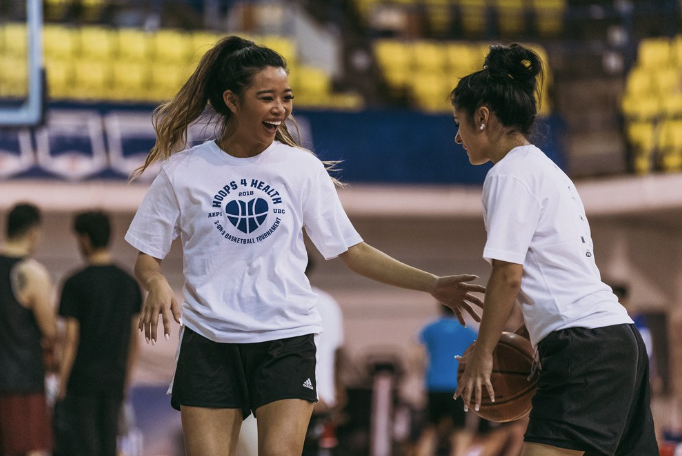
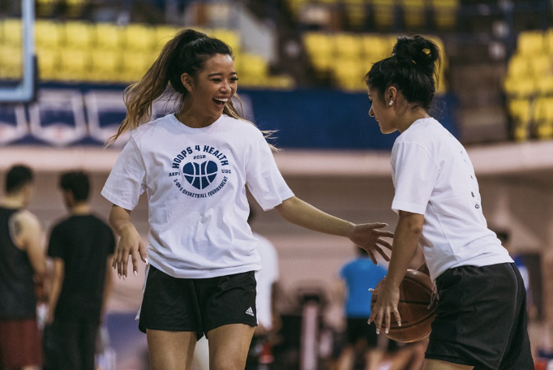

Project Overview
Hoops 4 Health is an annual philanthropic basketball tournament I co-founded to raise funds for the Heart and Stroke Foundation. The event attracts over 200 attendees each year, fostering community involvement, raising awareness about stroke, and promoting healthy lifestyles.
Purpose and Impact
As a stroke survivor, I created this event to support stroke research and highlight the importance of rehabilitation services. The funds raised directly contribute to the Heart and Stroke Foundation’s efforts in advancing stroke-related research and resources.
Key Achievements
- Led a 15-member team to raise over $22,000 in total for stroke research through the Heart and Stroke Foundation.
- Increased annual revenue by 15% through over 10 partnerships, 130+ donations, and 25+ sponsors.
- Organized and managed a large-scale event with over 20 participating teams and 200+ attendees annually.
- Promoted stroke awareness and healthy lifestyles, engaging local businesses and individuals through targeted marketing and outreach efforts.


 
